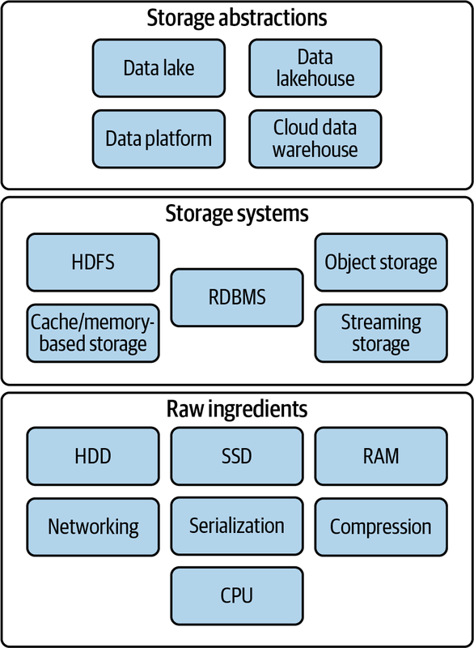
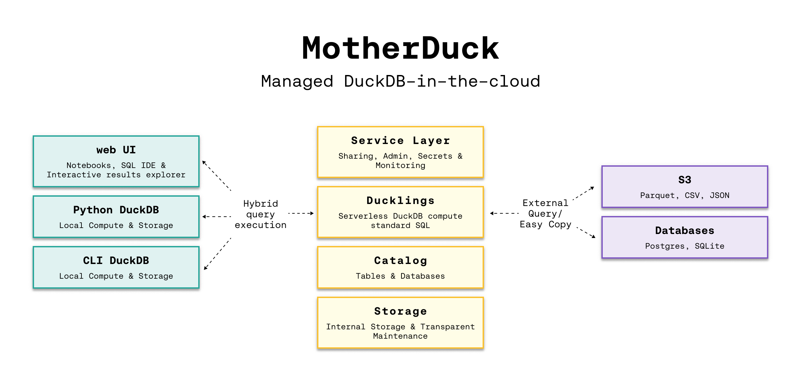

Lecture 5
DuckDB, Polars and file formats
Georgetown University
Fall 2024
Agenda and Goals for Today
Lecture
- Distributed file systems
- Modern file types
- Working with large tabular data on a single node
- DuckDB
- Polars
Lab
- Run a similar task with Pandas, polars and duckdb
Logistics and Review
Deadlines
Assignment 1: Python Skills Due Sept 5 11:59pmLab 2: Cloud Tooling Due Sept 5 6pmAssignment 2: Shell & Linux Due Sept 11 11:59pmLab 3: Parallel Computing Due Sept 12 6pm- Assignment 3: Parallelization Due Sept 18 11:59pm
- Lab 4: Docker and Lambda Due Sept 19 6pm
- Assignment 4: Containers Due Sept 25 11:59pm
- Lab 5: DuckDB & Polars Due Sept 26 6pm
Look back and ahead
- Continue to use Slack for questions!
- Docker (containerization)
- Lambda functions
- Coming up: Spark and project
Filesystems
Raw ingredients of storage systems
- Disk drives (magnetic HDDs or SSDs)
- RAM
- Networking and CPU
- Serialization
- Compression
- Caching

Single machine vs. distributed storage

Single machine
- They are commonly used for storing operating system files, application files, and user data files.
- Filesystems are also used in databases to store data files, transaction logs, and backups.
Distributed storage
- A distributed filesystem is a type of filesystem that spans multiple computers.
- It provides a unified view of files across all the computers in the system.
- Have existed before cloud
File storage
A file is a data entity with specific read, write, and reference characteristics used by software and operating systems.
Local disk
- Operating system–managed filesystems on local disk partition of SSD or magnetic disk:
- NTFS (Windows)
- HFS+ (MacOS)
- ext4 (Linux)() on a local disk partition of SSD or magnetic disk
Network-attached (NAS)
- File storage system to clients over a network
- Including redundancy and reliability, fine-grained control of resources, storage pooling across multiple disks for large virtual volumes, and file sharing across multiple machines
Cloud filesystems
- Not object store (more on that later)
- Not the virtual hard drive attached to a virtual machine
- Fully managed filesystem which takes care of networking, managing disk clusters, failures, and configuration (Azure Files, Amazon Elastic Filesystem)
- Backed by Object Store
Object stores
The term object storage is somewhat confusing because object has several meanings in computer science. In this context, we’re talking about a specialized file-like construct. It could be any type of file: TXT, CSV, JSON, images, videos, audio, or pretty much any type of file.


- Contains objects of all shapes and sizes.
- Every object gets a unique identifier
- Objects are immutable; cannot be modifier in place (unlike local FS)
- Distributed by design
- Massively scalable REST API access
Distributed FS vs Object Store
| Distributed File System | Object Storage | |
|---|---|---|
| Organization | Files in hierarchical directories | Flat organization (though there can be overlays to provide hierarchical files structure) |
| Method | POSIX File Operations | REST API |
| Immutability | None: Random writes anywhere in file | Immutable: need to replace/append entire object |
| Scalability | Millions of files | Billions of objects |
Both provide:
- Fault tolerance
- Availability and consistency
Before: Data locality (for Hadoop)

Today: de-coupling storage from compute

Data on-disk formats
Plain Text (CSV, TDF, FWF)

- Pay attention to encodings!
- Lines end in linefeed, carriage-return, or both together depending on the OS that generated
- Typically, a single line of text contains a single record
JSON
Warning
JSON files have two flavors: JSON Lines vs. JSON. Typically when we say data is in JSON format, we imply it’s JSON Lines which means that there is a single JSON object per line, and there are multiple lines.
JSON Lines
Four records, one per line. No ending comma.
Binary files

Issues with common file formats, particularly CSVs:
- Still ubiquitous and highly error prone (even in 2023)
- The default delimiter is also one of the most familiar characters in the English language—the comma
- Not a uniform format
- Delimiter (comma, tab, semi-colon, custom)
- Quote characters (single or doble quote)
- Escaping to appropriately handle string data
- Doesn’t natively encode schema information
- No direct support for nested structures
- Encoding and schema information must be configured in the target system to ensure appropriate ingestion
- Autodetection is a convenience feature provided in many cloud environments but is inappropriate for production ingestion, and can be painfully slow
- Data engineers are often forced to work with CSV data and then build robust exception handling and error detection to ensure data quality on ingestion
Introducing Apache Parquet
Apache Parquet
- Free and open-source column-oriented data storage format
- Created by Twitter and Cloudera
- v1.0 released in July, 2013
- Stores data in a columnar format (as opposed to row format) and is designed to realize excellent read and write performance
- Parquet-encoded data builds in schema information and natively supports nested data
- Parquet is portable
- Has become the standard for modern data warehouses and big data tools
- Supported by R and Python through Apache Arrow (more on that coming up!)
Traditional row-store


Say you wanted to answer the question “How many balls did we sell?, the engine must scan each and every row until the end!
Column-store

Row groups
Data is stored in row groups!
Only the required fields
Metadata, compression, and dictionary encoding


Apache Arrow for in-memory
Apache Arrow is a development platform for in-memory analytics. It contains a set of technologies that enable big data systems to process and move data fast. It specifies a standardized language-independent columnar memory format for flat and hierarchical data, organized for efficient analytic operations on modern hardware.
Before Arrow
After Arrow
Arrow Compatibility
Arrow Performance


Use Arrow to read/write CSVs and Parquet
Python
Use the pyarrow library or straight from pandas
Recommendation: save your intermediate and analytical datasets as Parquet!
Polars
Lightning-fast DataFrame library for Rust and Python
Before we begin..
Pandas is a fast, powerful, flexible and easy to use open source data analysis and manipulation tool, built on top of the Python programming language.
- Pandas is slow, well yes but also, not so much if you use it the right way.
Apache Arrow and the “10 Things I Hate About pandas” (A 2017 post from the creator of Pandas..)
50 times faster data loading for Pandas: no problem (but this is an old 2019 article..)
Polars

Why is Polars faster than Pandas?
Polars is written in Rust. Rust is a compiled language, Python is an interpreted language.
- Compiled language: you generate the machine code only once then run it, subsequent runs do not need the compilation step.
- Interpreted language: code has to be parsed, interpreted and converted into machine code every single time.
Parallelization: Vectorized operations that can be executed in parallel on multiple CPU cores.
Lazy evaluation: Polars supports two APIs lazy as well as eager evaluation (used by pandas). In lazy evaluation, a query is executed only when required. While in eager evaluation, a query is executed immediately.
Polars uses Arrow as its in-memory representation of data. Similar to how pandas uses Numpy (although Pandas 2.0 does allow using Arrow as the backend in addition to Numpy).
- [Excerpt from this post from Ritchie Vink, author of Polars] Arrow provides the efficient data structures and some compute kernels, like a SUM, a FILTER, a MAX etc. Arrow is not a query engine. Polars is a DataFrame library on top of arrow that has implemented efficient algorithms for JOINS, GROUPBY, PIVOTs, MELTs, QUERY OPTIMIZATION, etc. (the things you expect from a DF lib).
- Polars could be best described as an in-memory DataFrame library with a query optimizer.
Ease of use
Familiar API for users of Pandas: there are differences in syntax
polars != pandasbut it is still a Dataframe API making it straightforward to perform common operations such as filtering, aggregating, and joining data. See migrating from PandasReading data
# must install s3fs -> "pip install s3fs" # Using Polars import polars as pl polars_df = pl.read_parquet("s3://nyc-tlc/trip data/yellow_tripdata_2023-06.parquet") # using Pandas import pandas as pd pandas_df = pd.read_parquet("s3://nyc-tlc/trip data/yellow_tripdata_2023-06.parquet")Selecting columns (see Pushdown optimization)
Ease of use (contd.)
Familiar API for users of Pandas:
Filtering data
# Using Polars filtered_polars = polars_df[polars_df['column1'] > 10] # Using Pandas filtered_pandas = pandas_df[pandas_df['column1'] > 10]Even though you can write Polars code that looks like Pandas, it is better to
write idiomatic Polars codethat takes advantages of unique features Polars offers.Migrating from Apache Spark: Whereas the Spark DataFrame is analogous to a collection of rows, a Polars DataFrame is closer to a collection of columns.
Installation, data loading and basic operations
Install polars via pip.
Import polars in your Python code and read data as usual
import polars as pl
df = pl.read_parquet("s3://nyc-tlc/trip data/yellow_tripdata_2023-06.parquet")
df.head()
shape: (5, 19)
┌──────────┬────────────┬──────────────┬──────────────┬─────┬──────────────┬──────────────┬──────────────┬─────────────┐
│ VendorID ┆ tpep_picku ┆ tpep_dropoff ┆ passenger_co ┆ ... ┆ improvement_ ┆ total_amount ┆ congestion_s ┆ Airport_fee │
│ --- ┆ p_datetime ┆ _datetime ┆ unt ┆ ┆ surcharge ┆ --- ┆ urcharge ┆ --- │
│ i32 ┆ --- ┆ --- ┆ --- ┆ ┆ --- ┆ f64 ┆ --- ┆ f64 │
│ ┆ datetime[n ┆ datetime[ns] ┆ i64 ┆ ┆ f64 ┆ ┆ f64 ┆ │
│ ┆ s] ┆ ┆ ┆ ┆ ┆ ┆ ┆ │
╞══════════╪════════════╪══════════════╪══════════════╪═════╪══════════════╪══════════════╪══════════════╪═════════════╡
│ 1 ┆ 2023-06-01 ┆ 2023-06-01 ┆ 1 ┆ ... ┆ 1.0 ┆ 33.6 ┆ 2.5 ┆ 0.0 │
│ ┆ 00:08:48 ┆ 00:29:41 ┆ ┆ ┆ ┆ ┆ ┆ │
│ 1 ┆ 2023-06-01 ┆ 2023-06-01 ┆ 0 ┆ ... ┆ 1.0 ┆ 23.6 ┆ 2.5 ┆ 0.0 │
│ ┆ 00:15:04 ┆ 00:25:18 ┆ ┆ ┆ ┆ ┆ ┆ │
│ 1 ┆ 2023-06-01 ┆ 2023-06-01 ┆ 1 ┆ ... ┆ 1.0 ┆ 60.05 ┆ 0.0 ┆ 1.75 │
└──────────┴────────────┴──────────────┴──────────────┴─────┴──────────────┴──────────────┴──────────────┴─────────────┘A Polars DataFrame processing pipeline example
Here is an example that we will run as part of the lab in a little bit.
Think how you would code this same pipeline in Pandas…

Polars pipeline
Further reading
DuckDB
An in-process SQL OLAP database management system
DuckDB
It is like sqllite, but for analytics. What does this mean? It means that your database runs inside your process, there are no servers to manage, no remote system to connect to. Very snappy, easy to experiment with SQL like syntax.
DuckDB does vectorized processing i.e. loads chunks of data into memory (tries to keep everything in the CPU’s L1 and L2 cache) and is thus able to handle datasets bigger than the amount of RAM available.
DuckDB supports Python, R and a host of other languages.
DuckDB - quick introduction
DuckDB is an in-process SQL OLAP database management system

Duck DB
Key Features
Columnar Storage & Vectorized Query processing: DuckDB contains a columnar-vectorized query execution engine, where queries are still interpreted, but a large batch of values (a “vector”) are processed in one operation.
- Most analytical queries (think group by and summarize) or even data retrieval for training ML models require retrieving a subset of columns and now the entire row, columnar storage make this faster.
In-Memory Processing: all data needed for processing is brought within the process memory (recall that columnar storage format helps with this) making the queries run faster (no call to a database over the network).
SQL Support: highly Postgres-compatible version of SQL1.
ACID Compliance: Transactional guarantees (ACID properties) through bulk-optimized Multi-Version Concurrency Control (MVCC).
Use-cases for DuckDB
- Data Warehousing
- Business Intelligence
- Real-time Analytics
- IoT Data Processing
DuckDB in the wild
How might you think about DuckDB - DIY Version
Datalake and DuckDB
Modern Data Stack in a Box with DuckDB: DuckDB, Meltano, Dbt, Apache Superset
How might you think about DuckDB - Fully-managed

Seamlessly analyze data, whether it sits on your laptop, in the cloud or split between. Hybrid execution automatically plans each part of your query and determines where it’s best computed. If you use DuckDB with data lakes in s3, it’ll be much faster to run your analyses on MotherDuck.
Setting Up DuckDB
Configuration and Initialization: DuckDB is deeply integrated into Python and R for efficient interactive data analysis. DuckDB provides APIs for Java, C, C++, Julia, Swift, and others.
Connecting to DuckDB
Setting Up DuckDB (contd.)
Supported data formats: DuckDB can ingest data from a wide variety of formats – both on-disk and in-memory. See the data ingestion page for more information.
import duckdb duckdb.read_csv('example.csv') # read a CSV file into a Relation duckdb.read_parquet('example.parquet') # read a Parquet file into a Relation duckdb.read_json('example.json') # read a JSON file into a Relation duckdb.sql('SELECT * FROM "example.csv"') # directly query a CSV file duckdb.sql('SELECT * FROM "example.parquet"') # directly query a Parquet file duckdb.sql('SELECT * FROM "example.json"') # directly query a JSON file
Querying DuckDB
Essential reading: Friendlier SQL with DuckDB, SQL Introduction
Basic SQL Queries:
import duckdb
import pandas as pd
babynames = pd.read_parquet("https://github.com/anly503/datasets/raw/main/babynames.parquet.zstd")
duckdb.sql("select count(*) from babynames where Name='John'")Aggregations and Grouping
Querying DuckDB (contd.)
Essential reading: From & Join clauses
Joins and Subqueries
# -- join two tables together
duckdb.sql("SELECT * FROM table_name JOIN other_table ON (table_name.key = other_table.key")Window Functions
powerplants = pd.read_csv("https://raw.githubusercontent.com/anly503/datasets/main/powerplants.csv", parse_dates=["date"])
q = """
SELECT "plant", "date",
AVG("MWh") OVER (
PARTITION BY "plant"
ORDER BY "date" ASC
RANGE BETWEEN INTERVAL 3 DAYS PRECEDING
AND INTERVAL 3 DAYS FOLLOWING)
AS "MWh 7-day Moving Average"
FROM powerplants
ORDER BY 1, 2;
"""
duckdb.sql(q)Using the DuckDB CLI & Shell
Install the DuckDB CLI (download link) OR use it in your browser via shell.duckdb.org/ for easy data exploration using just SQL.
Once installed you can import a local file into the shell and run queries.
- You can download
powerplants.csvfrom here.
- You can download
C:\Users\<username>\Downloads\duckdb_cli-windows-amd64>duckdb
v0.8.1 6536a77232
Enter ".help" for usage hints.
Connected to a transient in-memory database.
Use ".open FILENAME" to reopen on a persistent database.
D CREATE TABLE powerplants AS SELECT * FROM read_csv_auto('powerplants.csv');
D DESCRIBE powerplants;
┌─────────────┬─────────────┬─────────┬─────────┬─────────┬───────┐
│ column_name │ column_type │ null │ key │ default │ extra │
│ varchar │ varchar │ varchar │ varchar │ varchar │ int32 │
├─────────────┼─────────────┼─────────┼─────────┼─────────┼───────┤
│ plant │ VARCHAR │ YES │ │ │ │
│ date │ DATE │ YES │ │ │ │
│ MWh │ BIGINT │ YES │ │ │ │
└─────────────┴─────────────┴─────────┴─────────┴─────────┴───────┘
D SELECT * from powerplants where plant='Boston' and date='2019-01-02';
┌─────────┬────────────┬────────┐
│ plant │ date │ MWh │
│ varchar │ date │ int64 │
├─────────┼────────────┼────────┤
│ Boston │ 2019-01-02 │ 564337 │
└─────────┴────────────┴────────┘
DProfiling in DuckDB
Query Optimization: Use the EXPLAIN & ANALYZE keywords to understand how your query is being executed (see Query Plan and the time being spent in individual steps of your query.
DuckDB will use all the cores available on the underlying compute, but you can adjust it (scenario: your process is not the only application on that VM, you want to limit the amount of resources it gets). Full configuration available here.
D select current_setting('threads'); ┌────────────────────────────┐ │ current_setting('threads') │ │ int64 │ ├────────────────────────────┤ │ 8 │ └────────────────────────────┘ D SET threads=4; D select current_setting('threads'); ┌────────────────────────────┐ │ current_setting('threads') │ │ int64 │ ├────────────────────────────┤ │ 4 │ └────────────────────────────┘ D
Benchmarks and Comparisons
- This is a tricky topic, in general, you can make your choosen solution look better by focussing on metrics on which your choosen solution provides better results.
- Some links to explore further:
Reddit post: Benchmarking for DuckDB and Polars
TPC-H benchmarks for DuckDB: did not find anything on the duckdb.org, but this site has several DuckDB TPC-H benchmarks.

A simple example of using DuckDB and Apache Arrow using NYC Taxi dataset
This notebook reads the NYC taxi dataset files for the year 2021 (about ~29 million rows) and runs some analytics operation on this dataset. This dataset is too big to fit into memory.
We read the data from S3 using apache Arrow (pyarrow).
The zero-copy integration between DuckDB and Apache Arrow allows for rapid analysis of larger than memory datasets in Python and R using either SQL or relational APIs.
We create a DuckDB instance in memory and using the connection to this in-memory database We run some simple analytics operations using SQL syntax.
Further reading
- Parallel Grouped Aggregation in DuckDB
- Meta queries
- Profiling queries in DuckDB
- DuckDB tutorial for beginners
- DuckDB CLI API
- Using DuckDB in AWS Lambda
- Revisiting the Poor Man’s Data Lake with MotherDuck
- Supercharge your data processing with DuckDB
- Friendlier SQL with DuckDB
- Building and deploying data apps with DuckDB and Streamlit